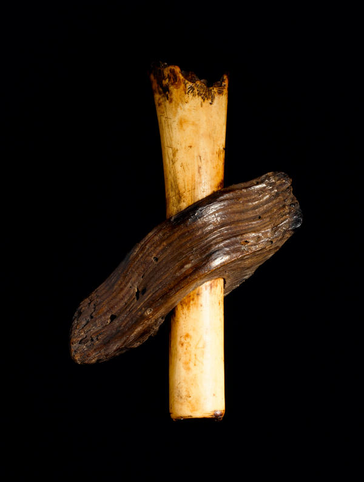

Education
Live #ShakespeareQS with project curator of #ShakespeareExhibition, Becky Allen
On the day of the live Q&A, the Museum: received 323 mentions, gained 409 (559-150) followers (more than ask a curator day), 356 clicks on links shared, 168 Retweets, 25 favourites. Mentions from partnership organisations: Penguin, World Shakespeare Festival, RSC, The Globe
-
 At 1pm, project curator of the #ShakespeareExhibition , Becky Allen, will be answering questions in a live #ShakespeareQS on @britishmuseum
At 1pm, project curator of the #ShakespeareExhibition , Becky Allen, will be answering questions in a live #ShakespeareQS on @britishmuseum -
Make sure you get your questions in now by tweeting @britishmuseum with #ShakespeareQS
-
. @britishmuseum Have a great exhibition on: 'Shakespeare: Staging the World' From 1-2pm today you can chat live with the curator Becky Allen
-
One hour to go until the live #ShakespeareQS with project curator Becky Allen, start sending your questions!
-
Perfect lunchtime activity! RT @britishmuseum One hour to go until the live #ShakespeareQS with project curator Becky Allen #powerhour
-
Dear Shakespeare; To be is to #hashtag . I might even follow #ShakespeareQS , in preparation with the equally culturally tasty @britishmuseum
-
 If you're on Twitter, from 1-2pm today project curator of Shakespeare: staging the world at the British Museum, Becky Allen, will be answering questions about the exhibition in a live Q&A.; Tag your questions with #ShakespeareQS to join in!
If you're on Twitter, from 1-2pm today project curator of Shakespeare: staging the world at the British Museum, Becky Allen, will be answering questions about the exhibition in a live Q&A.; Tag your questions with #ShakespeareQS to join in! -
Live Q&A from 1-2pm today. Tweet your question to Shakespeare exhibit curator Becky Allen from @britishmuseum & include #ShakespeareQS .
-
Here is Becky Allen, project curator of #ShakespeareExhibition ! http:// instagr.am/p/QmdElgS4QW/ QmdElgS4QW/
-
@britishmuseum What was the most difficult aspect of curating the #shakespeareexhibition and why? #ShakespeareQS
-
. @soupdragon2000 The exhib aims to create a dialogue between object and text so we had to make lots of tough decisions about what to include
-
@britishmuseum loved the exh,how did you conceive idea for it & were there any other objects you wished you could've had? #ShakespeareQS
-
Get the questions flowing! @britishmuseum 13.00-14.00 today Becky Allen project curator #ShakespeareExhibition live Q&A #ShakespeareQS
-
Live #ShakespeareExhibition Q&A on Twitter at 13.00. Tweet your questions to @britishmuseum with #ShakespeareQS .
-
@britishmuseum How long were you working on/ researching the exhibition before it opened? #ShakespeareQS
-
. @mdarby1989 I started last May but Dora Thornton, the Lead Curator, had spent 2 years before then selecting objects and writing the book
-
@britishmuseum dear becky, what has been your favourite piece of audience feedback? #ShakespeareQS
-
 . @benbrynmor There have been lots of very moving responses to the Robben Island Bible and its story - here is a photo: pic.twitter.com/S9NCjF0t om/S9NCjF0t
. @benbrynmor There have been lots of very moving responses to the Robben Island Bible and its story - here is a photo: pic.twitter.com/S9NCjF0t om/S9NCjF0t -
@britishmuseum Becky, which Shakespeare character do you most identify yourself with and why? #ShakespeareQS
-
. @andrew_shore I adore Portia in 'Merchant' - she is smart, sassy and brilliant in the court scene - but I might be more of a Lady Macbeth!
-
@britishmuseum #ShakespeareQS I visited the exhibition. An eclectic mix. What one item did you want to put in but missed the cut?
-
. @TinctureOfMuse We have lots of paintings in the exhib but there were many more we would have loved to have - we ran out of wall space!
-
@britishmuseum thank you. It must have been very hard to pick the exhibits. Loved the visual and aural working together.
-
. @GreenFlagAward I love this Scottish witch's cursing bone used for casting charms with hen's blood. It's very Macbeth! pic.twitter.com/eE25rAoM om/eE25rAoM
-
LIVE CHAT NOW! Project curator of #ShakespeareExhibition at the @britishmuseum , Becky Allen: use #ShakespeareQS to join in!
-
@britishmuseum #shakespeareQS hi Becky. I loved the exhibition! How did you decide on the different areas/zones to focus on?
-
. @sallyrmunday We wanted to focus on Shakespeare's places of imagination - places and ideas which had meaning for him and his audiences
-
@britishmuseum #ShakespeareQS and where did the inspiration for the exhibit come from?
-
. @combatclaire It's a collaboration with @TheRSC and Shakespearean Jonathan Bate. He had the idea of exploring Shakespeare's Imagined Places
-
@britishmuseum Rebecca, what's been your favourite 'punter's comment' you've happened to catch? #ShakespeareQS
-
@CreightonJim Lots of people remark on how handsome Jonjo O'Neill is - he's a very dashing Richard III... http:// ow.ly/emxt0
-
@britishmuseum #ShakespeareQS Why do you feel that Shakespeare is still so important & relevant today, asides from in literary history?
-
. @heartsofsand I think it's because he understands human nature and was clearly brilliant at absorbing information and ideas #ShakespeareQS
-
Just 10 mins left to ask project curator Becky Allen a question about the #ShakespeareExhibition ! Use the hash tag #ShakespeareQS
-
@britishmuseum What did you learn about Shakespeare while working on the exhibit? #ShakespeareQS
-
. @violentbloom I realised how popular the London playhouse was when Shakes wrote his plays - it was a new medium with enormous mass appeal
-
@britishmuseum Shakespeare is Britain's número uno, but if curating for the worlds "top 3", who would you like to do? :) #ShakespeareQS
-
@1manonabicycle that's a great question. I'd love to do an exhibition about another playwright - Ibsen, Brecht, Chekov- there's a long list!
-
. @kathrynhavelock Harriet Walter performing Cleopatra's poignant suicide speech is my favourite performance http:// ow.ly/emyG1
-
Thanks for all your questions. The exhibition is on until 25 November - I hope you enjoy it! http:// ow.ly/emzDr
-
Thanks to Becky Allen @ the @britishmuseum for a fab Twitter Q&A on Shakespeare today. Search #ShakespeareQS or see BM's timeline to follow.
-
Really impressed by the @britishmuseum answering qus about the new exhibition! Very interesting, thanks!
-
Really enjoying reading the @britishmuseum #ShakespeareExhibition twitter Q+As - a great way to get people involved